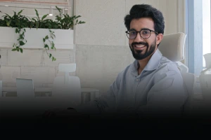
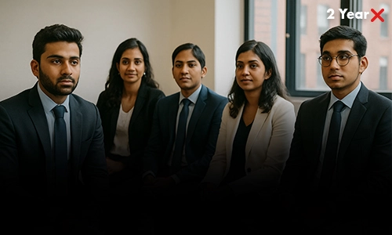
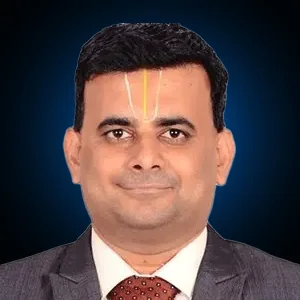

Don’t Waste 2 Years Just for an MBA
Build Your Own Business Too!!

From A to Z, Every Skill, Every Experience,
Every Opportunity
At FITA B School, You Get It All.
We believe business is built on action, not just theory. We bring together creative, open-minded people from all over the world to prepare our students to lead, launch, and grow so that they graduate ready to thrive in an ever-changing world. Our curriculum combines rigorous academics, mentorship from industry leaders, and immersive business challenges, ensuring you’re more than MBA-ready, you’re future-ready.


of MBA students say they learned more from internships than in classrooms.
cost of a traditional 2-year MBA.
of MBA grads feel "job-ready" when they graduate.

Transform Your Career with Our Comprehensive Program
Build Your Core Business Foundation. Master core business skills like Marketing, Finance & Strategy. Decode Business Models through Case Studies.
Learn from Industry Leaders. Work with founders via our Shadow CEO initiative. Learn investor pitching, GTM strategies, and growth hacks.
Apply Your Skills in Real Scenarios. Join consulting challenges for real brands. Get placement coaching, mock interview feedback, and portfolio support.
Ready to Make Your Mark. Build your business and capstone projects. Pitch your idea to our VC Panel. Graduate job-ready — and offer-ready.
Master digital marketing fundamentals with SEO, social media, email campaigns, and content strategy to enhance your online presence and drive success.
Enroll Now


FITA B-School is not just one of the Top B Schools in Chennai,
It’s where business is practised, not just preached.
Founder & CEO, FITA Academy
Chairman & Managing Director, Alliance Group & Urbanrise
Investor, The Chennai Angels
CEO, Business Blogging
Founder & Chairman, Krea Healthcare
Founder, Happyness Coach
Director, FITA EdTech Pvt Ltd
Founder & CEO, Experienzing
Managing Director, Grand Square Mall
Founder, STRATEGIZER
Managing Director, Samrat Houseware Pvt Ltd
Managing Director, SD and Sons
CEO & Managing Director, M.A.C
CEO, Biometric Cable
Chairman, Guild Engineering Turnkey Solutions
Co-founder, Venzo Technologies and Krediq
Founder and CEO, Presso
Founder, Ekanta
Co-Founder and COO, @ Zifo
Co-Founder, Shycart
Co-Founder, Insillion
Director of Engineering, Nutanix

Sr. VP, Agilisium Consulting
Senior Vice President, Sales & Marketing, Alliance
Motivational Speaker and Academician
FITA B-School offers a 1-year fast-track program designed to replace theory-heavy classrooms with practical, industry-backed training, making us a top choice among the best B Schools in Chennai.
It depends on how you define "worth". If you're after a job title alone, maybe not. But if you want leadership skills, strategic thinking, startup experience, or career elevation, a modern, hands-on MBA-style program like FITA’s can be a game-changer.
No. FITA MBA welcomes both freshers and working professionals.
Every term includes hands-on projects, consulting assignments, and industry interaction, plus rigorous academics inspired by Chennai’s best B-schools.
No credential guarantees a job. But an MBA-style program that includes live projects, mentorship, and actual startup building, like FITA B-School, gives you something employers value: evidence of doing.
Early internships, mentor guidance, and startup/consulting labs prepare you for leadership from Day 1.
There’s no universal “right” time. Many join after graduation, while others apply after 1–3 years of work experience. What matters is your intent, if you're hungry for growth, it’s time.
While most MBA business schools in Chennai follow traditional 2-year models, FITA B-School compresses high-impact learning, internships, and startup exposure as well.
Not always. FITA B-School, for instance, welcomes freshers who want to build fast, innovative, and hands-on. We also have early professionals who want to switch lanes or move up.
Expect roles in marketing, strategy, business development, consulting, operations, product management, and more. With FITA’s focus on real-world simulations, you'll graduate job-ready in all the right directions.
Yes, thanks to our mentorship from 100+ CEOs, live startup simulations, and placement partnerships, FITA B-School is considered among the Top 10 B Schools in Chennai for ambitious professionals and fresh graduates.
It’s everything. At FITA B-School, you won’t just network with peers, you will connect with CEOs, mentors, founders, investors, and hiring partners who guide and grow with you.
It depends on your skills, domain, and profile. At FITA B-School, students have secured offers ranging from ₹6 LPA to ₹25 LPA, thanks to our practical learning approach and employer visibility.
No, but you do need business knowledge, leadership ability, and exposure to real markets. FITA B-School is built like a startup studio, so you build a real business during our MBA program in Chennai, not just talk about one.